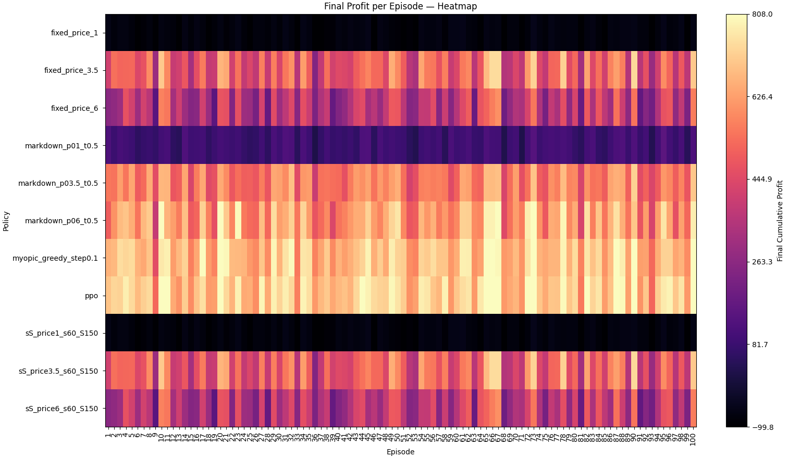

Classical
vs RL Pricing for Perishable Inventory under Stochastic Demand
Student name: Joshua Walter Student
ID: 14296418 Supervisor: Haoyu Liu
Degree/Subject code: 41030
Abstract
TODO [Summarise each major section: problem/context → method → key
findings (with numbers) → recommendations. Ensure it aligns explicitly
to the stated objectives. Aim for high clarity and coherence to meet HD
criteria.] > HD tip: one sentence per element (context, aim, method,
results, recommendation). Make the link to objectives explicit.
Executive Summary
TODO [Non‑technical overview covering: background & objectives;
methodology/approach and why it was appropriate; main outcomes/findings;
recommendations; limitations; next steps. Integrate brief quantitative
highlights.] > HD tip: mirror the report structure and show a clear
line of sight from objectives → evidence → recommendation.
The problem of maximising revenue while managing waste is a complex,
finely balanced topic that all firms that deal with perishable products
face. This issue exists across a range of industries, such as food,
pharmaceuticals, and even fashion, where sellers have to manage the
inventory of perishable items that lose value or become unsellable after
their shelf life has passed. Firms must address this optimal pricing
correctly to maximise revenue and minimise waste. However, a complexity
arises in this problem when considering how demand can vary. Under
stochastic demand (demand influenced by various factors), understanding
and making accurate pricing decisions becomes increasingly complex.
Dynamic pricing strategies have been developed to predict and understand
demand and adjust prices over time in response to variables that affect
demand. These strategies have become increasingly popular as machine
learning and reinforcement learning technologies have become more
accessible, enabling improved sales performance in uncertain
environments. However, accurately implementing dynamic pricing
strategies in inventory systems with perishability introduces complex
decision-making challenges, such as determining the optimal price across
multiple periods, while accounting for current inventory levels, whether
to hold or replenish, and product shelf-life and stochastic demand. The
motivation for my research stems from the problem’s importance and
relevance to almost all firms that manage inventories of perishable
items. While much of the existing research models perishable inventory
and stochastic demand as separate factors due to the complexity and lack
of computer-aided models, there is now a significant gap in using
advanced algorithms to develop strategies that optimise pricing and
replenishment decisions across multiple periods. This research paper
seeks to analyse how optimising dynamic pricing strategies in
multi-period perishable inventory systems under stochastic demand can
improve revenue while allowing the possibility to optimise for other
factors, such as reducing waste and making informed inventory ordering
decisions.
1.1 Background
Perishable units (e.g., fresh foods) contribute disproportionately to
waste and margin variability due to the challenges in optimising prices
and inventory policies. Prices influence conversion and demand, while
poor replenishment decisions can result in spoilage and stockout risk,
further impacting margins. Retail waste is predominantly an operational
issue: “causes of food waste are related to… inefficient store
operations and replenishment policies” (Teller et al., 2018). Small
margins exacerbate the effect of waste. Margins of grocery retailers are
usually 2–3%; reducing food waste can double their profit margins
(Riesenegger & Hübner, 2022). While reducing waste is crucial for
retailers, price is one of the most effective variables managers can
manipulate to encourage or discourage demand in the short run (Bitran
& Caldentey, 2003), thereby reducing waste and improving
profitability. Many retailers rely on simple pricing policies for their
inventory. The Fixed Price Policy maintains a static price over a finite
horizon, making it easy to implement and potentially competitive when
inventory and demand exhibit slight variance. Inventory Band Pricing
Policy maps inventory levels to prices, leading to state-dependent
decisions, but struggles with demand and stock discrepancies. Where
static policies struggle to remain competitive, dynamic pricing reduces
waste by 21% while increasing the chain’s gross margins by 3% (Sanders,
2023). Markdown Policy is a dynamic pricing policy that relies on deeper
discounts as items near expiry; however, it may result in under- or
over-discounts when dealing with high stock variances. Myopic Greedy
Policy chooses a price that maximises the immediate profit given the
current inventory state, ignoring subsequent steps in the episode, which
may result in high end-of-horizon waste. Many retailers choose to
utilise these policies because they are cheap to run, robust and
straightforward to implement. However, they do not utilise the coupling
between demand, inventory and forecasting. A successful policy must
respond in real time to changing inventory states and demand signals;
otherwise, retailers risk lost sales, overstocking, or eroded profit.
While maximising profit is the primary indicator of a successful policy,
it is equally important that a policy can respond to social issues.
1.2 Problem Definition
We consider a finite-horizon, multi-period inventory system that
holds a single perishable product type with stochastic, price-sensitive
demand. Each day, a policy adjusts the price and the order quantity to
maximise profit at the end of the episode. The final profit is the
cumulative daily profit, which accounts for restock costs, holding
costs, expirary costs, and stockout costs. The problem is to compare
classical policy classes (static price, markdown, newsvendor) against
reinforcement-learning policies (e.g., PPO) on profit, service level,
and waste.
In short: How do classical pricing/inventory policies (static,
markdown, newsvendor) compare to reinforcement-learning policies (e.g.,
PPO) in multi-period perishable inventory under stochastic demand?
1.3 Objectives
Aim To benchmark classical and RL pricing/inventory
policies through simulation to produce data on profit, service level,
and waste in multi-period perishable inventory under stochastic
demand.
Objectives 1. Design and implement a simulated
grocery environment for a single perishable SKU with stochastic, price
and freshness‑sensitive demand. 2. Train a PPO agent to output (price,
replenish) actions each period; tune hyperparameters via reproducible
experiments. 3. Compare PPO to the three baselines on profit, waste
rate, stockout frequency, and margin volatility over \ge 100 episodes. 4. Report statistical
significance of differences and provide actionable insights.
1.4 Scope and Limitations
Scope. Periodic review; single product; single
location; finite shelf life with discrete age states; stochastic demand
influenced by price and freshness; immediate or fixed‑lead
replenishment; no substitution or competition; full price control within
defined bounds.
Out of scope. Multi‑SKU cross‑elasticities,
multi‑echelon supply chains, promotional calendars, strategic customer
behavior, and real‑world deployment constraints (e.g., price‑change
frictions).
Assumptions. Known demand model class and
elasticity range; perfect state observability; no stockout backorders;
disposal cost for expired inventory.
1.5 Report Structure
TODO
2. Literature Review
Foundational Models There is a consensus in the
existing research that optimising dynamic pricing with inventory control
can increase profit and reduce wastage when dealing with perishable
items. Early frameworks introduced the concepts regarding dynamic
pricing under uncertain demand (Gallego & van Ryzin, 1994; Zhao
& Zheng, 2000); however, Keskin, Li and Song were able to further
advance the existing theory by using data-driven methods that cover
perishability more extensively by altering pricing and the ordering
process based on environmental changes to increase profitability (Keskin
et al., 2022). Elmaghraby and Keskinocak (2003) contribute to
demand-driven pricing strategies for inventory systems through a
comprehensive review that concluded that utilising dynamic pricing with
inventory control can significantly outperform revenue performance when
compared to static models, especially evident in uncertain demand
(Elmaghraby & Keskinocak, 2003). Despite the consensus that dynamic
pricing strategies with inventory control can generate more revenue than
static models, a divergence between the research is evident in modelling
assumptions. In some research, the perishability of items is assumed to
be of constant deterioration (Nahmias, 1982), whereas other studies
assume a limited fixed shelf-life where perishability does not affect
the cost of the item; instead, it is disposed of at the end of its
lifetime. Keskin, Li, and Song (2022) study perishable items in
stochastic demand to create data-driven pricing & ordering policies.
They test on supermarket data and calculate regret rates however, they
acknowledge that in multi-period and changing environments, further work
still needs to be done on adaptive models that link perishability to
dynamic pricing. A gap is evident from the existing research -
connecting perishability to dynamic pricing in a multi-period system
needs further study, mainly through modelling that more accurately
represents real-world factors.
Assumptions At the core of modelling how dynamic
pricing can affect revenue is how to approach uncertainty in demand. In
the research work proposed by Ferreira, K., Simchi-Levi, D., &
Stewart, H they propose a method of machine learning known as Thompson
Sampling to understand the effects of uncertain demand parameters
(Ferreira et al., 2015). Furthermore, additional papers attempt to model
uncertainty in demand for discrete choice models in dynamic revenue
strategies to understand how customers react (Talluri & van Ryzin,
2004). In other research, models attempt to learn from randomness and
variability in demand using nonparametric learning algorithms that
modify prices dynamically (Keskin et al., 2022), allowing for pricing
systems to be able to adjust for unpredictable and evolving demand
patterns in perishable inventory settings. In the case of airline
pricing, uncertainty in demand has another layer of complexity - a
behavioural element that introduces two sources of uncertainty: timing
& price responsiveness. It is clear that in more theoretical
research, demand can be modelled using more straightforward static
functions. However, there is a divergence in methods for modelling
between theoretical and practical demand. In practical settings, demand
is treated with more naunce where it cannot be modelled using
traditional methods. Instead, more cutting-edge methods are used to
understand it. To handle the real-world complexity of demand, Jo, S.,
Lee, G. M., & Moon, I. propose using a reinforcement learning
algorithm to learn from customer patterns instead of 3 relying on fixed
demand functions (Jo et al., 2024). Despite the research on
understanding uncertainty in demand, there remains a gap in developing a
scalable model that can adapt continuously in a scenario with
perishability across multiple periods in uncertain demand.
Machine Learning Approaches As technology continues
to improve, machine learning has allowed dynamic pricing strategies to
be more adaptive and flexible, using significantly more data points to
accurately enhance revenue and reduce wastage of perishable products in
multi-period situations. Nowak and Pawłowska-Nowak’s research proposes
how machine learning can improve dynamic pricing using SVMs in
e-commerce settings (Nowak & Pawłowska-Nowak, 2024). Additionally,
research by Chen et al aims to understand how machine learning models
can be used to predict optimal dynamic pricing strategies in a setting
where uncertain demand exists (Chen et al., 2018). A limitation of using
machine learning models is that it is not adaptable to new, emergent
customer demand, which complex behaviour factors may influence. As a
point of divergence in research, cutting-edge studies examine how
reinforcement learning can understand complex factors to improve dynamic
pricing strategies that previous machine learning models could not deal
with. In the study done by Nomura et al, a deep reinforcement learning
based approach is proposed. This paper explores how Proximal Policy
Optimisation can maximise revenue through pricing optimisations and
inventory restocking decisions. An essential consideration of this
research is how this model can account for complex demand where
customers may be more likely to change preferences based on shelf life
and pricing, and demonstrate the potential to tune to different
outcomes, such as reducing waste, increasing revenue (Nomura et al.,
2025). Further use of reinforcement learning looks at how including Deep
Q-Learning (DQL) can address the problems faced when modelling dynamic
pricing and ordering problems for perishable products in uncertain
demand. In Yavuz & Kaya’s research, deep reinforcement learning can
outperform all traditional approaches in handling perishable products
(Yavuz & Kaya, 2024). While cutting-edge research moves away from
methods best suited to theoretical understanding of relating dynamic
pricing to demand, there is still a gap in research when comparing how
different types of advanced computer-aided learning, such as Machine
Learning and Reinforcement Learning, can benefit this problem.
3. Method
This study adopts a simulation-based optimisation framework in which
the problem is modelled as a finite-horizon Markov Decision Process
(MDP) for perishable inventory under stochastic, price-sensitive demand.
In this simulation, the dynamic pricing policies have been optimised,
enabling the evaluation of each strategy under controlled uncertainty
and perishability without resorting to extreme analytical
simplifications.
The success of a policy is computed by comparing the average
end-of-horizon profit and the profit standard deviation with the
optimal: high profit, low deviation = high reward, low risk; and the
least optimal: low profit, high deviation = low reward, high risk.
This method fits the research question, as the MDP explicitly encodes
the trade-offs between ageing, lost sales, and expiring items across a
finite horizon, enabling the testing and evaluation of different pricing
policies.
3.1 Simulation Design
Overview The simulation has been set up to enable a
single perishable item type within a finite-horizon inventory system.
Demand is stochastic, price-sensitive, and influenced by seasonal
multipliers (e.g., weekends may see more or less demand than weekdays).
Time is discrete (days), and at the start of each day, expired units are
removed. For the benchmarks, a single perishable item type was chosen
(see Listing 1). This item was chosen to match the properties of
milk—short shelf life, high demand, low cost, and simplified properties
such as no salvage costs. The policy being evaluated sets a selling
price for the day and optionally restocks inventory. From this action, a
random demand is generated, and sales are completed FIFO from the
inventory. The day is then ticked to the next period, and the KPIs are
recorded. This process will repeat until the environment terminates. The
environment has been set up to be configurable, enabling the evaluation
of different scenarios for item types, and includes reproducible
randomness with a seed parameter.
Data Collection All data collected by the simulation
is stored locally as a CSV file to ensure security. Policy evaluation is
run multiple times across different seeds to ensure fair, repeatable
comparisons between policies.
3.2 Variables, Parameters
and Assumptions
Decision variables (agent
actions)
Price: (p_t ).
Replenishment fraction: (r_t ), mapped to an
order quantity (R_t), capped by
max_restock and
capacity.
State variables (agent
observations)
On-hand inventory (I_t)
Day index (episode progress) and day-of-week encodings ((, ))
Current price fraction ()
Normalized visitors for today and
tomorrow (optional forcasting)
Capacity-left fraction (free capacity / total
capacity)
Expiry-pressure (share of stock expiring within two
days)
The simulated product is a low-priced, high-volume, short-shelf-life
item.
Perfect state observability
No backorders; no substitution
Full price flexibility within bounds
Environment and policy share no hidden
information
3.3 Controls and
Experimental Conditions
Environment controls: identical traffic seasonality, noise
parameters, shelf-life, capacity, and costs across all runs and
policies.
Evaluation seeds: a fixed list of random seeds is used for every
policy (PPO and baselines) so episode realisations are
comparable.
Baselines: three non-learning comparators are defined a
priori—(i) Myopic + Fixed Replenishment, (ii) Rules-based Markdown,
(iii) Newsvendor-inspired—with parameters fixed before
evaluation.
Sensitivity (one factor at a time): NegBin vs. Poisson; conversion
model; penalty weights; shelf-life; elasticity.
7. Compute & Export KPIs
For each policy, compute and save to CSV file: - Total profit
mean final_cum_profit_mean - Total profit STD
final_cum_profit_std - Total sales mean
total_sales_mean - Total unmet demand mean
total_unmet_mean - Total waste mean total_waste_mean -
Missed margin mean missed_margin_mean - Waste
cost mean waste_cost_mean - Episodes
episodes
Sensitivity (one factor at a time): NegBin
vs. Poisson; conversion model; penalty weights; shelf-life;
elasticity.
9. Generate plots
Run the plots generator tool to compute features and export plots
and tables.
3.5 Tools, Software
Python (3.9–3.12 commonly)
NodeJS
stable-baselines3 (SB3) — PPO
PyTorch
Gymnasium
SB3 VecEnv
Monitor wrapper
TensorBoard
NumPy
Matplotlib
React
3.5 Verification & Validation
Simulation Environment To test the simulation
environment, a gameified UI was created that allows users to interact
with the environment the same way that the policies do (see Listings 2,
3, and 4). The purpose was to publish the simulation online, have real
users interact with the system, identify edge cases and bugs, and gather
feedback and validate expected behaviours.
Policies To ensure fairness across policy
validation, the ‘randomness’ in each environment was seeded to ensure
reproducible behaviour. In addition, the actions of each policy were
monitored and checked for out-of-bounds values during stress tests.
Furthermore, the simulation environment recorded the values for each
state and wrote them to a CSV file. A sepperate script was created to
generate a graphical display that reflects the actions of the policy
throughout an episode (e.g Listing 5 shows the PPO policy on episode
1).
4. Results
Figure 2 Final Profit Per Episode Heatmap
 Heat map of
cumulative profit for each episode by policy (rows) across episodes
(columns). The colour encodes profit magnitude: greater variation
indicates higher volatility in the policy’s performance (greater
cumulative profit std), while uniform rows denote more stable
performance. Both PPO and Myopic policies consistently achieve the
highest performance.
Figure 3 Average Final Profit per Policy
Mean end-of-horizon
profit by policy (averaged across episodes). Higher bars = higher
average profit. PPO was the highest performer for profit, totalling an
average episode profit of $716. Myopic was the second-best-performing
policy with an average episode profit of $690. Markdown policies rank
third and fourth with an average episode profit of $560-$623, and the
following policies are a mix between fixed-price and SS policies.
Table 1. Policy Level Averages Across Episodes
Policy averages over
100 episodes. Columns show mean end-of-horizon profit and standard
deviation, sales, unmet demand, waste, missed margin (from unmet), and
waste cost. This table enables direct comparison of profitability and
the other variables. PPO is the most profitable ($715.9 ± $84.7) policy
with low unmet (10.4) and low waste (1.9). Myopic-greedy is the next
closest in profit ($690.4 ± $83.2) and has higher unmet (28.6) but
similarly small waste (1.2). Markdown_p06_t0.5 ($622.9 ± $103.5)
achieves high profit but at the cost of higher waste (23.1) and waste
cost (27.8), suggesting it is buying profit by overstocking.
Markdown_p03.5_t0.5 ($559.6 ± $77.5) has high sales (318.8); however, it
is unable to meet demand, resulting in high unmitigated (60.3) and
missed margin (99.7), and profit below PPO. Fixed_price_1 and
sS_price1_s60_S150 produce the highest sales (459.7) but fail to produce
a profit (−$79.4 ± $15.9) as the unmet is enormous (600.1), indicating
that when prices get too low, there is excess demand and stockouts,
resulting in high missed margins and low profit. Fixed_price_6 and its
sS variants have high waste (102.9) and subsequently produce enormous
waste costs ($123.5). While profit is generated ($358.0), it is much
lower than the top performing models, and variability is high (±$111.3).
Fixed_price_3.5 / sS_price3.5 reach profits of $493.5 ± $115.2) but are
an unfavourable risk/return trade-off compared to the top level
policies. In contrast, the $1 variants have low SD and are consistently
unprofitable.
5. Discussion
What happened
Over the 100 episodes, PPO was the policy that resulted in the
highest mean end-of-horizon profit, dominating on risk-return with high
profit low variance (≈ $715.9 ± $84.7). Not only did PPO achieve the
highest profit, but it also had low unmet demand (10.4) and waste (1.9),
making it more sustainable while maintaining high service. This result
aligns with other research showing that the performance of the trained
RL policy is competitive with or superior to the corresponding baselines
(Balaji et al., 2019). The second-best-performing policy was the
Myopic-greedy policy, which had a lower average profit (≈ $690.4 ±
$83.2) but also had unmet demand (28.6). The two following policies were
both markdown variants; however, their performance differed
significantly: markdown_p06_t0.5 earned a relatively high profit (≈
$622.9 ± $103.5) by trading for higher waste (23.1) and waste cost
($27.8), due to high prices driving down conversion. Markdown_p03.5_t0.5
had high sales (318.8) but could not properly manage inventory levels,
resulting in stockouts (unmet 60.3) and large missed margins (99.7).
Ultimately, by being unable to keep up with demand, this policy’s profit
was capped at (≈ $559.6 ± $77.5). At the extremes for the policies,
fixed_price_1 / sS_price1 both produced the highest sales (459.7).
However, both were unable to generate profits (≈ −$79.4 ± $15.9) due to
being unable to keep up with demand (unmet 600.1), whereas the
fixed_price_6 / sS_price6 variants overpriced inventory, driving down
conversion rates. This resulted in low sell-out rates, producing high
waste (102.9) and waste costs ($123.5), resulting in a loss of (≈ $358.0
± $111.3).
Why it happened
The simulation results demonstrate patterns explored in existing
research on pricing mechanisms. For example, the Newsvendor problem is a
classic challenge: if too much stock is ordered, there will be excess
stock at the end of the period, and if too little stock is ordered,
demand peaks result in unmet sales (Schweitzer and Cachon, 2000). In
this simulation, the successful policies generated profit despite the
added complexity of perishable inventory by selecting prices/restock
quantities that balance overage (waste) and underage (stockouts/missed
margin). However, policies that set the price too low (e.g.,
fixed_price_1) shifted the equilibrium towards higher stockouts. In
contrast, the policies that set the price too high (e.g., fixed_price_6)
led to lower inventory sell-through and higher waste. The PPO policy
demonstrated joint control over price restocking, allowing it to track
this trade-off episode by episode and simultaneously reduce underage and
overage costs—consistent with newsvendor theory and optimality in
dynamic inventory.
Another mechanism demonstrated by the differing approaches in the
policies is the trade-off between learning dynamics and greediness. In
short, this is a balance between making an optimal decision for the
current period without considering future periods vs. considering the
entire finite horizon (Besbes, Chaneton, and Moallemi, 2021). The PPO
method learns effective decision policies while preventing significant
updates via a clipped surrogate objective (Wang, He, and Tan, n.d.),
thereby enabling the policy to learn stable improvements despite
training in a partially observed, noisy environment (Schulman et al.,
2017). In addition, the PPO actor observes inputs such as the expiring
fraction of the inventory, foot traffic forecast, day of week, and
remaining inventory capacity, which allow it to learn pricing paths that
may result in lower immediate profit but favour higher profit across the
episode. In contrast, the myopic policy favours short-term profit at the
expense of higher unmet demand (myopic = 28.6 vs PPO = 10.4). Overall,
this caused the myopic policy to average close to the PPO policy but not
surpass it.
While the remaining policies resulted in lower profits at higher risk
(larger std in average episode), they also revealed interesting issues.
Markdown_p06_t0.5 policy tries to ‘buy revenue’ by overstocking and
marking down inventory price, which results in a temporary revenue boost
but enormous waste costs. Additionally, the twin policy
markdown_p03.5_t0.5 uses a low initial price, leading to demand
exceeding availability and resulting in large unmet and missed margins
even with high sales.
Implications
In practice, we should replace classic policies with RL-based
policies as the primary drivers of pricing and inventory control
decisions for perishable items. However, while RL algorithms can perform
better overall, they should be used with care and adequately wrapped in
guardrails to prevent extreme actions. Myopic models should be used as a
fallback if any input to the RL models fails or KPIs exceed
thresholds.
6. Conclusion and
Recommendations
The main goal of the current study was to benchmark the classical
policies (static, markdown, myopic/newsvendor) vs. the RL (PPO) policy
for a multi-period perishable inventory under stochastic demand. The PPO
policy was the clear leader, with the highest mean profit and the lowest
unmet demand and waste. The myopic policy was the second-highest
performer, while the markdown variants traded profit for higher waste or
stockouts, and extreme static prices could not generate profit. These
results indicate that horizon-aware, joint price–order control (PPO)
best balances overage/underage costs, whereas greedy or rigid rules
mismanage demand or spoilage.
Recommendations Several important changes need to be
implemented to expand this to real-world scenarios: - 1. Consider a more
realistic profit calculation that includes fixed costs, waste/disposal
fees, salvage revenue, cost of capital, labour costs, etc. - 2. Expand
the observation vector for the PPO model to include additional state
indicators, such as forecasting. - 3. Train the PPO on multiple
configurations (moving towards a generalised policy for any perishable
item).
References
Format all in-text citations and reference list in APA
7th. Use reference managers (e.g., Zotero, EndNote, Mendeley)
to ensure consistency.
 Mean end-of-horizon
profit by policy (averaged across episodes). Higher bars = higher
average profit. PPO was the highest performer for profit, totalling an
average episode profit of $716. Myopic was the second-best-performing
policy with an average episode profit of $690. Markdown policies rank
third and fourth with an average episode profit of $560-$623, and the
following policies are a mix between fixed-price and SS policies.
Mean end-of-horizon
profit by policy (averaged across episodes). Higher bars = higher
average profit. PPO was the highest performer for profit, totalling an
average episode profit of $716. Myopic was the second-best-performing
policy with an average episode profit of $690. Markdown policies rank
third and fourth with an average episode profit of $560-$623, and the
following policies are a mix between fixed-price and SS policies. Policy averages over
100 episodes. Columns show mean end-of-horizon profit and standard
deviation, sales, unmet demand, waste, missed margin (from unmet), and
waste cost. This table enables direct comparison of profitability and
the other variables. PPO is the most profitable ($715.9 ± $84.7) policy
with low unmet (10.4) and low waste (1.9). Myopic-greedy is the next
closest in profit ($690.4 ± $83.2) and has higher unmet (28.6) but
similarly small waste (1.2). Markdown_p06_t0.5 ($622.9 ± $103.5)
achieves high profit but at the cost of higher waste (23.1) and waste
cost (27.8), suggesting it is buying profit by overstocking.
Markdown_p03.5_t0.5 ($559.6 ± $77.5) has high sales (318.8); however, it
is unable to meet demand, resulting in high unmitigated (60.3) and
missed margin (99.7), and profit below PPO. Fixed_price_1 and
sS_price1_s60_S150 produce the highest sales (459.7) but fail to produce
a profit (−$79.4 ± $15.9) as the unmet is enormous (600.1), indicating
that when prices get too low, there is excess demand and stockouts,
resulting in high missed margins and low profit. Fixed_price_6 and its
sS variants have high waste (102.9) and subsequently produce enormous
waste costs ($123.5). While profit is generated ($358.0), it is much
lower than the top performing models, and variability is high (±$111.3).
Fixed_price_3.5 / sS_price3.5 reach profits of $493.5 ± $115.2) but are
an unfavourable risk/return trade-off compared to the top level
policies. In contrast, the $1 variants have low SD and are consistently
unprofitable.
Policy averages over
100 episodes. Columns show mean end-of-horizon profit and standard
deviation, sales, unmet demand, waste, missed margin (from unmet), and
waste cost. This table enables direct comparison of profitability and
the other variables. PPO is the most profitable ($715.9 ± $84.7) policy
with low unmet (10.4) and low waste (1.9). Myopic-greedy is the next
closest in profit ($690.4 ± $83.2) and has higher unmet (28.6) but
similarly small waste (1.2). Markdown_p06_t0.5 ($622.9 ± $103.5)
achieves high profit but at the cost of higher waste (23.1) and waste
cost (27.8), suggesting it is buying profit by overstocking.
Markdown_p03.5_t0.5 ($559.6 ± $77.5) has high sales (318.8); however, it
is unable to meet demand, resulting in high unmitigated (60.3) and
missed margin (99.7), and profit below PPO. Fixed_price_1 and
sS_price1_s60_S150 produce the highest sales (459.7) but fail to produce
a profit (−$79.4 ± $15.9) as the unmet is enormous (600.1), indicating
that when prices get too low, there is excess demand and stockouts,
resulting in high missed margins and low profit. Fixed_price_6 and its
sS variants have high waste (102.9) and subsequently produce enormous
waste costs ($123.5). While profit is generated ($358.0), it is much
lower than the top performing models, and variability is high (±$111.3).
Fixed_price_3.5 / sS_price3.5 reach profits of $493.5 ± $115.2) but are
an unfavourable risk/return trade-off compared to the top level
policies. In contrast, the $1 variants have low SD and are consistently
unprofitable.